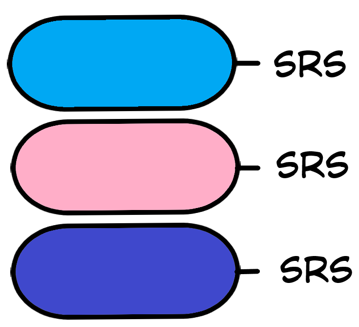
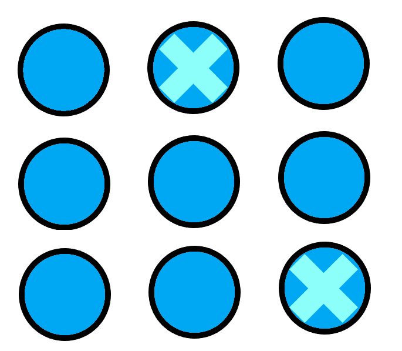

back to all liu packets
back to home
hw packet 5
sampling methods
3 sampling methods liu gave here
- convenience sampling- BIASED
- voluntary response sampling- BIASED
- simple random sample (SRS)
how to do SRS
- label individuals (assign number or put slips of paper in a hat)
- rng that shit
- select \(x\) of them (\(n\) is the population size)
more random sampling methods (part 1)
stratified random sample (also has the SRS acronym, idfk)
- split pop into groups (strata)- preferably groups w/ similar characteristics (homogenous)
- choose an SRS from each strata SRS = each member is equally likely to be chosen
more sampling methods (part 2)
cluster sampling
- split population into groups
- based on location (usually? idk) select random groups and sample everyone there
- heterogeneous (diverse) groups good for representation
overview of all 3 of note
stratified sampling

sample some from all groups (homogeneous good)
cluster sampling

sample all from chosen groups (heterogeneous good)
systematic sampling
choose a random start & sample at regular intervals
problems with sample surveys
- undercoverage bias: when some population members are less likely to be included
-
nonresponse bias:
when an individual is part of a sample but chooses not to respond or can't be reached
- response bias: pattern of inaccurate results due to some influence (wording, interviewer, lying, etc.)
- voluntary response/self-selected sample, he talked about this previously
- convenience sampling, same as above